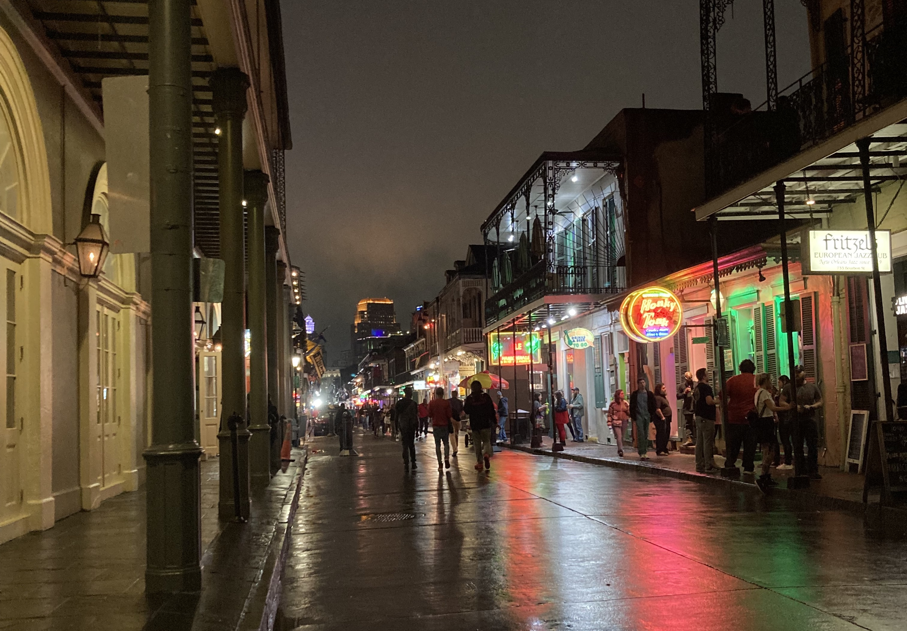

NeurIPS 2022 - Papers that Piqued
December 2022

NeurIPS x New Orleans ended yesterday 😢 closing out an in person & virtual deep learning whirlwind! Before I dive in, I'm going to share some 👠2022 NeurIPS factoids. Let's go! At NeurIPS 2022 out of the 9,634 submitted papers, 2,672 were accepted 😱 In the accepted papers, what do you think the 5 most frequent title bigrams were? 🤔... It probably won't surprise you that they were: (1) neural network, (2) reinforcement learning, (3) language models, (4) graph neural, (5) federated learning. And boy did those trends come to life in the poster sessions! Everyone 💯 brought their A-game both to the conference and ~The Big Easy~. So, if you don't recognize the photo above 👆 you spent too much time at the poster sessions 😋
In this blog post, I'm going to to start by listing all of the outstanding Main Track and Dataset & Benchmark papers, so that you can easily access the papers the reviewers thought were 🔥🔥🔥 Then I'm going to share 25 papers that piqued my interest across 5 areas: Transformers, Self-Supervised Learning, Autoencoders, Time Series, Graph Neural Networks. This list is certainly NOT comphrensive, but gives a taste of what we experienced over the last two weeks. How did I pick these 25 papers? 🤓 In person, I visited ~literally~ all of the posters and, at minimum, read every single title. After returning to Caltech, I went through all 2,672 posters again, whittled my list down to 179 papers that piqued my interest, then semi-randomly selected 5 posters for each of 5 topics that motivate me.
As you make your way though this list, when you click on a paper it will take you to the paper's review page where you can 👀 what the reviewers thought and check out the full paper. Hopefully you resonate with at least a few of my paper picks! With that, let's get started 👩‍💻😎👨‍💻
✦ Is Out-of-Distribution Detection Learnable?
✦ Photorealistic Text-to-Image Diffusion Models with Deep Language Understanding
✦ Elucidating the Design Space of Diffusion-Based Generative Models
✦ 🏘️ ProcTHOR: Large-Scale Embodied AI Using Procedural Generation
✦ Using natural language and program abstractions to instill human inductive biases in machines
✦ A Neural Corpus Indexer for Document Retrieval
✦ High-dimensional limit theorems for SGD: Effective dynamics and critical scaling
✦ Gradient Descent: The Ultimate Optimizer
✦ Riemannian Score-Based Generative Modelling
✦ Gradient Estimation with Discrete Stein Operators
✦ An empirical analysis of compute-optimal large language model training
✦ Beyond neural scaling laws: beating power law scaling via data pruning
✦ On-Demand Sampling: Learning Optimally from Multiple Distributions
Dataset & Benchmarks
✦ LAION-5B: An open large-scale dataset for training next generation image-text models
✦ MineDojo: Building Open-Ended Embodied Agents with Internet-Scale Knowledge
🚨Pro Tip: If you did register for the conference, I highly recommend you check out the NeurIPS 2022 Visualization Tool to investigate papers' relatedness. If you didn't register, you'll have to imagine searching this glorious paper space shown below 🤓
✦ Staircase Attention for Recurrent Processing of Sequences
✦ Recipe for a General, Powerful, Scalable Graph Transformer
✦ Improving Transformer with an Admixture of Attention Heads
✦ Recurrent Memory Transformer
✦ Contrastive and Non-Contrastive Self-Supervised Learning Recover Global and Local Spectral Embedding Methods
✦ Graph Self-supervised Learning with Accurate Discrepancy Learning
✦ HierSpeech: Bridging the Gap between Text and Speech by Hierarchical Variational Inference using Self-supervised Representations for Speech Synthesis
✦ VideoMAE: Masked Autoencoders are Data-Efficient Learners for Self-Supervised Video Pre-Training
✦ Masked Autoencoders that Listen
✦ Embrace the Gap: VAEs Perform Independent Mechanism Analysis
✦ Hybrid Neural Autoencoders for Stimulus Encoding in Visual and Other Sensory Neuroprostheses
✦ Exploring the Latent Space of Autoencoders with Interventional Assays
✦ Generating multivariate time series with COmmon Source CoordInated GAN (COSCI-GAN)
✦ Self-Supervised Contrastive Pre-Training For Time Series via Time-Frequency Consistency
✦ BILCO: An Efficient Algorithm for Joint Alignment of Time Series
✦ WaveBound: Dynamic Error Bounds for Stable Time Series Forecasting
✦ OTKGE: Multi-modal Knowledge Graph Embeddings via Optimal Transport
✦ Provably expressive temporal graph networks
✦ Learning to Reconstruct Missing Data from Spatiotemporal Graphs with Sparse Observations
✦ Template based Graph Neural Network with Optimal Transport Distances
Glad you made it through this tiny taste of NeurIPS 2022! Hopefully some of these papers piqued your interest too 😊
In this blog post, I'm going to to start by listing all of the outstanding Main Track and Dataset & Benchmark papers, so that you can easily access the papers the reviewers thought were 🔥🔥🔥 Then I'm going to share 25 papers that piqued my interest across 5 areas: Transformers, Self-Supervised Learning, Autoencoders, Time Series, Graph Neural Networks. This list is certainly NOT comphrensive, but gives a taste of what we experienced over the last two weeks. How did I pick these 25 papers? 🤓 In person, I visited ~literally~ all of the posters and, at minimum, read every single title. After returning to Caltech, I went through all 2,672 posters again, whittled my list down to 179 papers that piqued my interest, then semi-randomly selected 5 posters for each of 5 topics that motivate me.
As you make your way though this list, when you click on a paper it will take you to the paper's review page where you can 👀 what the reviewers thought and check out the full paper. Hopefully you resonate with at least a few of my paper picks! With that, let's get started 👩‍💻😎👨‍💻
Outstanding Papers â
Main Track✦ Is Out-of-Distribution Detection Learnable?
✦ Photorealistic Text-to-Image Diffusion Models with Deep Language Understanding
✦ Elucidating the Design Space of Diffusion-Based Generative Models
✦ 🏘️ ProcTHOR: Large-Scale Embodied AI Using Procedural Generation
✦ Using natural language and program abstractions to instill human inductive biases in machines
✦ A Neural Corpus Indexer for Document Retrieval
✦ High-dimensional limit theorems for SGD: Effective dynamics and critical scaling
✦ Gradient Descent: The Ultimate Optimizer
✦ Riemannian Score-Based Generative Modelling
✦ Gradient Estimation with Discrete Stein Operators
✦ An empirical analysis of compute-optimal large language model training
✦ Beyond neural scaling laws: beating power law scaling via data pruning
✦ On-Demand Sampling: Learning Optimally from Multiple Distributions
Dataset & Benchmarks
✦ LAION-5B: An open large-scale dataset for training next generation image-text models
✦ MineDojo: Building Open-Ended Embodied Agents with Internet-Scale Knowledge
🚨Pro Tip: If you did register for the conference, I highly recommend you check out the NeurIPS 2022 Visualization Tool to investigate papers' relatedness. If you didn't register, you'll have to imagine searching this glorious paper space shown below 🤓
Transformers 🤖
✦ Brain Network Transformer✦ Staircase Attention for Recurrent Processing of Sequences
✦ Recipe for a General, Powerful, Scalable Graph Transformer
✦ Improving Transformer with an Admixture of Attention Heads
✦ Recurrent Memory Transformer
Self-Supervised Learning 👉 👈
✦ Improving Self-Supervised Learning by Characterizing Idealized Representations✦ Contrastive and Non-Contrastive Self-Supervised Learning Recover Global and Local Spectral Embedding Methods
✦ Graph Self-supervised Learning with Accurate Discrepancy Learning
✦ HierSpeech: Bridging the Gap between Text and Speech by Hierarchical Variational Inference using Self-supervised Representations for Speech Synthesis
✦ VideoMAE: Masked Autoencoders are Data-Efficient Learners for Self-Supervised Video Pre-Training
Autoencoders ⧓
✦ Masked Autoencoders As Spatiotemporal Learners✦ Masked Autoencoders that Listen
✦ Embrace the Gap: VAEs Perform Independent Mechanism Analysis
✦ Hybrid Neural Autoencoders for Stimulus Encoding in Visual and Other Sensory Neuroprostheses
✦ Exploring the Latent Space of Autoencoders with Interventional Assays
Time Series ⌛
✦ Multivariate Time-Series Forecasting with Temporal Polynomial Graph Neural Networks✦ Generating multivariate time series with COmmon Source CoordInated GAN (COSCI-GAN)
✦ Self-Supervised Contrastive Pre-Training For Time Series via Time-Frequency Consistency
✦ BILCO: An Efficient Algorithm for Joint Alignment of Time Series
✦ WaveBound: Dynamic Error Bounds for Stable Time Series Forecasting
Graph Neural Networks 🔵━🔴
✦ Co-Modality Graph Contrastive Learning for Imbalanced Node Classification✦ OTKGE: Multi-modal Knowledge Graph Embeddings via Optimal Transport
✦ Provably expressive temporal graph networks
✦ Learning to Reconstruct Missing Data from Spatiotemporal Graphs with Sparse Observations
✦ Template based Graph Neural Network with Optimal Transport Distances
Glad you made it through this tiny taste of NeurIPS 2022! Hopefully some of these papers piqued your interest too 😊